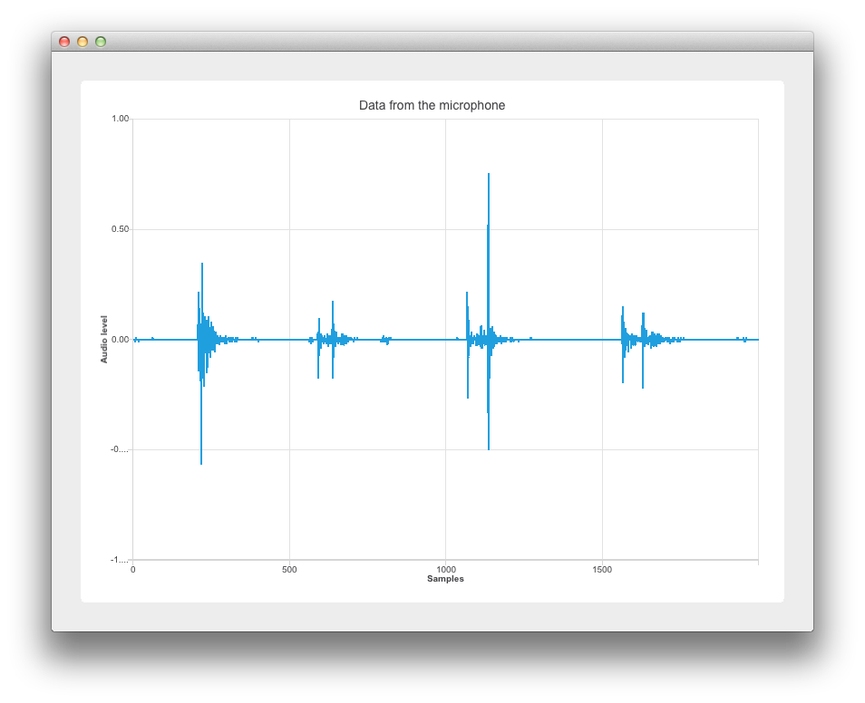
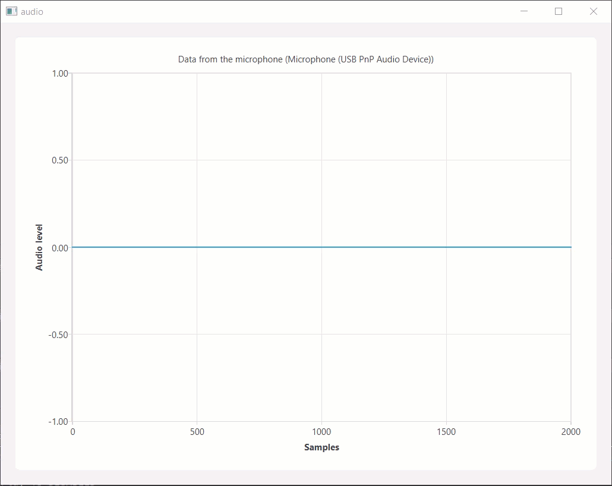

Audio Samples vs Sound Level
This example shows the drawing of microphone samples vs audio level.


This example's implementation is based on Widgets. See Getting Started Programming with Qt Widgets for information specific to that. The following sections cover how to use the Qt Charts API to display dynamic data on a samples vs sound level graph. For more information on sampling, see Sampling_(signal_processing).
Running the Example
To run the example from Qt Creator, open the Welcome mode and select the example from Examples. For more information, visit Building and Running an Example.
Retrieving the audio data
Thanks to the inclusion of the Qt Multimedia module in main.cpp, we create a new QAudioDevice that represents the default audio device of the target platform. We also check that we have an audio input device and let the user know if there is no input audio device available.
if (inputDevice.isNull()) {
QMessageBox::warning(nullptr, "audio",
"There is no audio input device available.");
return -1;
}
The audio device is then passed to Widget w using its constructor argument w. Then w.show() is called to display the widget.
Widget w(inputDevice);
w.resize(800, 600);
w.show();
Setting up the chart
This section covers setting up the chart and axes.
In widget.cpp, the re-implemented Widget constructor does the heavy lifting when it comes to the application's logic. The QChart, QLineSeries, and QChartView objects are declared as follows:
: QWidget(parent)
, m_chart(new QChart)
, m_series(new QLineSeries)
{
auto chartView = new QChartView(m_chart);
m_chart->addSeries(m_series);
m_series is for Using the audio input data.
The x-axis "Samples"
We set the min to max range on the x-axis from 0 to the XYSeriesIODevice::sampleCount. (Declared in xyseriesiodevice.h as 2000). We then set its title text.
auto axisX = new QValueAxis;
axisX->setRange(0, XYSeriesIODevice::sampleCount);
axisX->setLabelFormat("%g");
axisX->setTitleText("Samples");
The y-axis "Audio Level"
We create the QValueAxis axisY, set its range and title text.
auto axisY = new QValueAxis;
axisY->setRange(-1, 1);
axisY->setTitleText("Audio level");
Attaching the axes and setting the chart title
We attach the axes, hide the legend, and set the chart title to include the name of the microphone being used as an audio input.
m_chart->addAxis(axisX, Qt::AlignBottom);
m_series->attachAxis(axisX);
m_chart->addAxis(axisY, Qt::AlignLeft);
m_series->attachAxis(axisY);
m_chart->legend()->hide();
Laying out the chart
Here we use a QVBoxLayout mainLayout and add a our QChartview chartView to the vertical layout.
m_chart->setTitle("Data from the microphone (" + deviceInfo.description() + ')');
auto mainLayout = new QVBoxLayout(this);
Using the audio input data
This section shows how the microphone data is passed to the QLineSeries m_series. As before this relies on the Qt Multimedia module.
First we pass deviceInfo to a QAudioInput constructor.
mainLayout->addWidget(chartView);
m_audioInput = new QAudioInput(deviceInfo, this);
QAudioFormat formatAudio;
We then setup our QAudioFormat formatAudio, its channel count, sample rate, and sample format.
formatAudio.setSampleRate(8000);
formatAudio.setChannelCount(1);
We can now create a QAudioSource and set its buffer size.
formatAudio.setSampleFormat(QAudioFormat::UInt8);
m_audioSource = new QAudioSource(deviceInfo, formatAudio);
Now its time to attach our data to the chart. To do this we have created a class XYSeriesIODevice. See XYSeriesIODevice for how it is implemented.
m_audioSource->setBufferSize(200);
m_device = new XYSeriesIODevice(m_series, this);
m_device->open(QIODevice::WriteOnly);
XYSeriesIODevice
Implemented in xyseriesiodevice.cpp, XYSeriesIODevice takes care of the signal sampling. The writeData function, with a fixed resolution of 4, sets the QList m_buffer size based on the sample count, and fills it with QPointFs with an incremental x value and the y value set to 0.
{
static const int resolution = 4;
if (m_buffer.isEmpty()) {
m_buffer.reserve(sampleCount);
for (int i = 0; i < sampleCount; ++i)
m_buffer.append(QPointF(i, 0));
}
int start = 0;
We then do some sampling.
const int availableSamples = int(maxSize) / resolution;
if (availableSamples < sampleCount) {
start = sampleCount - availableSamples;
for (int s = 0; s < start; ++s)
m_buffer[s].setY(m_buffer.at(s + availableSamples).y());
}
for (int s = start; s < sampleCount; ++s, data += resolution)
m_buffer[s].setY(qreal(uchar(*data) -128) / qreal(128));
m_series->replace(m_buffer);
return (sampleCount - start) * resolution;